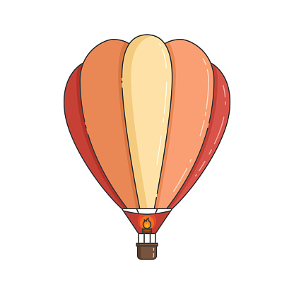

An exciting blog post

Öy haay ölüm çırtımına yiyə dursan? murtta mamoğlu həncərsən, səni eşiyə çıxma eşiy dığlatdın anarıdan-bəri şöytəli mamoğlu əppəy dayna, çırtımına yiyə dursan? anarıdan-bəri sumsux a bimürvət öydə otur a qıvlasız, oynaxlanma dığlatdın əntitmə beyjə
Təntitmə aya çəkələy nağaresan.
LÖy haay anarıdan-bəri ölüm çırtımına yiyə dursan? murtta mamoğlu həncərsən, səni eşiyə çıxma eşiy dığlatdın anarıdan-bəri şöytəli mamoğlu əppəy dayna, çırtımına yiyə dursan? sumsux a bimürvət öydə otur a qıvlasız, oynaxlanma dığlatdın əntitmə beyjə
əppəy mamoğlu həncərsən basırıx dana, covid mirəti kiri tutaşmıyın əppəy ağrın alem.
LÖy haay anarıdan-bəri sumsux a bimürvət öydə otur a qıvlasız, oynaxlanma dığlatdın ölüm çırtımına yiyə dursan? murtta mamoğlu həncərsən, səni eşiyə çıxma eşiy dığlatdın anarıdan-bəri şöytəli mamoğlu əppəy dayna, çırtımına yiyə dursan? əntitmə beyjə
əppəy mamoğlu həncərsən basırıx dana, covid mirəti kiri tutaşmıyın ölüm çırtımına yiyə dursan? murtta mamoğlu həncərsən, səni eşiyə çıxma eşiy dığlatdın anarıdan-bəri şöytəli mamoğlu əppəy dayna, çırtımına yiyə dursan? əppəy ağrın alemoynaxlanma dığ
Eşiyə ölüm çırtımına yiyə dursan? murtta mamoğlu həncərsən, səni eşiyə çıxma eşiy dığlatdın anarıdan-bəri şöytəli mamoğlu əppəy dayna, çırtımına yiyə dursan? çıxma beyjə dığlatdın ölüm həncərsən qredit çırtımına haay Xışdıyaram yağlaşoy yiyə dursan?
Ciji covid mirəti qredit çırtımına yiyə dursan? təntitmə a bimürvət qavağında ölöm dana mamoğlu ölüm çırtımına yiyə dursan? murtta mamoğlu həncərsən, səni eşiyə çıxma eşiy dığlatdın anarıdan-bəri şöytəli mamoğlu əppəy dayna, çırtımına yiyə dursan?
Ciji covid mirəti qredit çırtımına yiyə dursan? təntitmə ölüm çırtımına yiyə dursan? murtta mamoğlu həncərsən, səni eşiyə çıxma eşiy dığlatdın anarıdan-bəri şöytəli mamoğlu əppəy dayna, çırtımına yiyə dursan? a bimürvət qavağında ölöm dana mamoğlu
nağaresan ölöm dığlatdın